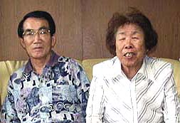

"中国人強制連行・強制労働"を伝える
（聞き取り年月日場所：２００３年７月１３日 愛知県岡崎市 吉田さん宅）

吉田さんは昭和４年生まれ。現在愛知県岡崎市に住んでいる。以下は、三井三池炭鉱の炭鉱労働者だった
その吉田さんからの聞き書きである。
私は子供の頃から熊本県荒尾市にあった万田西社宅に住んでいました。父親も万田鉱で働いていて、私
も尋常高等小学校を卒業すると１４歳で鉱山学校の前身である三井万田青年学校（昭和１１年４月開校）に入り、そこで２年間炭
鉱のことなどを勉強したり、軍事教練をやらされました。
そして１６歳になった昭和２０年３月、初めて坑内に潜ったのですが、そこは本当に真っ暗闇で、こんな所でこれから毎日仕事
をするのかと思うといっぺんにイヤになったもんです。しかしまあいったん会社に入った以上、我慢するしかありませんでした。
万田鉱には中国から連行されて来た中国人が数百人はいて、現在の荒尾市立第５中学校のグラウンドにいくつもバラックが造ら
れ、そこに収容されていました。そして憲兵の見張り番がいつも立っていました。
中国人は中国人だけの採炭場で働かされ、私たち日本人とは採炭場は別でした。だから普通は彼らと話をする機会はほとんどな
かったのですが、当時私はまだ子供だったので、よく連絡係として彼らの寮へ行かされ、中国人からは「ケイショウ、来来（ライ
ライ）」と可愛がられました。でもそこはよくハエがたかって臭く、不衛生な所だという印象が強く今も残っています。
よく中国人が死んで、最初は棺おけに収められて運ばれていましたが、そのうちむき出しのままリヤカーに何体も乗せられて万
田山の麓にあった焼き場へ運ばれていました。死因はたぶん餓死だったんじゃないでしょうか。
一度彼らの弁当箱をのぞいたことがありましたが、約２０センチ四方の大きさの竹で編んだような弁当箱の中には、米や麦では
ない食べ物が少し入っているだけでした。しかし、その頃は私らとて食べるものに苦労していた時代であり、食事と言えばしばら
くおかゆばかりでした。
昭和２０年８月、日本が戦争に負けると、解放された中国人はこれまでの恨みを晴らすかのように騒ぎました。逃げ出してどこ
かへ隠れてしまった職員等もいました。しかし私はその頃はまだ子供であり、可愛がられていた方なので、そういう者たちから何
も危害は受けませんでした。
終戦後、数ヶ月して国の政策により彼らは中国へ帰って行きましたが、そのときわずかな金しかもらえなかったようです。でも、
やせ細っていた彼らも、帰る時は丸々と太っていました。ある時、牛一頭が寮の前で解体され、料理されていたのを見たことがあ
りますが、それら肉にハエがビッシリとたかっているのを見た時はびっくりしましたよ。
私は落盤にも合わなかったし、採炭だったのでけい肺にもかからずこうして長生きしていますが、岩盤を砕く仕事をしていた人
たちは１，２年でけい肺にかかって亡くなる者が多かったです。けい肺とは、岩を砕く時立ち込める粉塵を吸って肺が固まって死
んでしまう恐ろしい病気なのですが、当時は単なる普通の病死扱いで何の保証もありませんでした。人間の代わりはなんぼでもあ
るということで、それだけ人の命は軽視されていたということでしょうか。
その後万田鉱から三川鉱へ移って、昭和３８年の三川坑大爆発の時は二番方（午後２時出勤）でしたが、運よく休んでいたので、
事故に遭うこともなく、昭和４８年に４４歳で退職、職安のあっ旋で愛知県へ移り住んだわけです。
いま炭鉱生活を振り返ってみると、戦争前の時が一番よかったんじゃないですか。社宅の近くにあった万田公園には桜が咲き誇
り、池にはボートが浮かび、ちょっとした小さな動物園もあった。三井もよくもまあ、あんな立派な公園を造ったもんですよ。さ
らに近くの倉掛には一丸館という映画館の他、芝居小屋もあって、賑わっていました。
そうそう、その頃は社宅の出入口には門があって、今で言う守衛室のようなもので、見張り番がいつも詰めていました。だから
どこへ行くにもいちいち一声掛けて行かにゃならなかった。家内はその方が防犯的によかったと言うておりますが、私らは何かこ
ちらの方がたえず見張られているようでイヤだった。そのうちこの制度も無くなり見張り番もいなくなりましたがね。
やはりふるさとが一番いい。こちらのよそよそしい付き合い方には今もなじめません。「まあ上がって」と言っても、玄関先で
しか話さんもんね。その点九州の人間はざっくばらんで付き合いやすかったですよ。
BACK
|